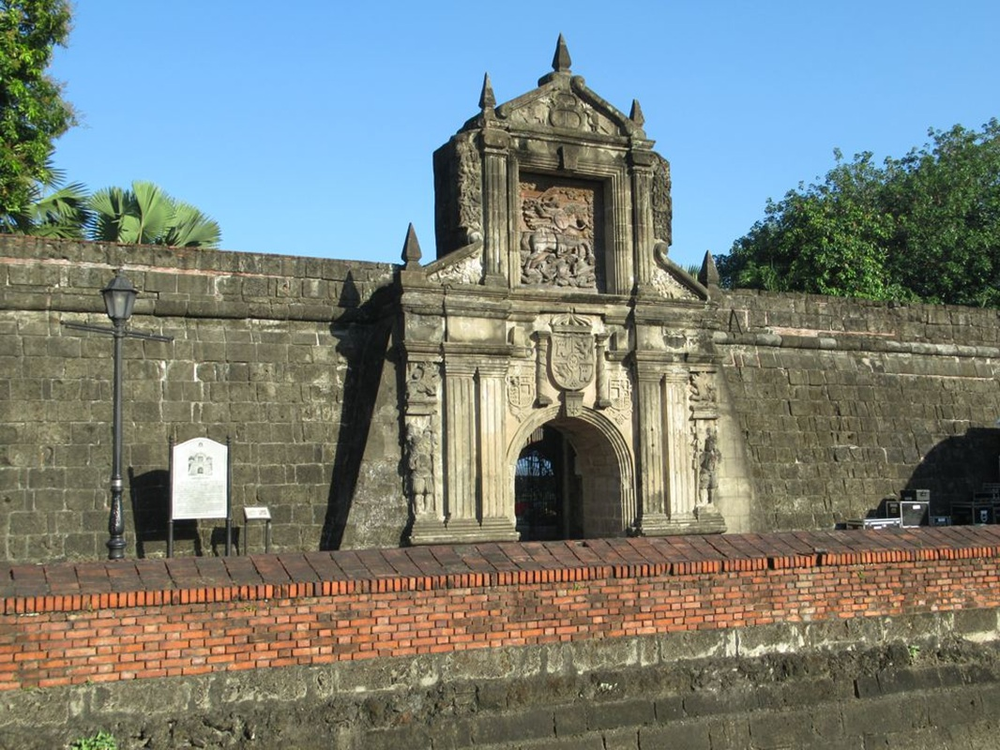

Fort Santiago is a 16th-century Spanish citadel at the mouth of the Pasig River — the most historically charged site in the Philippines, where national hero José Rizal was imprisoned before his execution on December 30, 1896.

Fort Santiago is a citadel built by Spanish conquistador Miguel López de Legazpi in 1571 at the mouth of the Pasig River, within the walls of Intramuros. It served as the military headquarters of the Spanish colonial government and later the American administration.
The fort is most famous as the place where Dr. José Rizal — the Philippines' national hero — was imprisoned in December 1896 before his execution at Bagumbayan (now Rizal Park). The Rizal Shrine within the fort preserves his cell, his personal effects, and the bronze footprints marking his final walk to the execution ground.
The fort also served as a prison during the Japanese occupation of WWII, where thousands of Filipino and American prisoners of war were held in the dungeons — many dying from the tidal flooding of the Pasig River. Fort Santiago is a place of profound historical weight and national significance.
Fort Santiago is inside Intramuros, Manila — easily reached by LRT, jeepney, or on foot from Rizal Park.
Take LRT Line 1 to Central Station. Walk north through Intramuros (~15 minutes) to reach Fort Santiago at the northern end of the walled city, facing the Pasig River.
LRT Line 1: Central Station | ~15 min walkWalk north from Rizal Park (Luneta) through Intramuros to Fort Santiago (~20 minutes on foot). The walk through the cobblestone streets of Intramuros is itself a historical experience.
Walk from Luneta: ~20 min | Pass Manila Cathedral en routeEnter through the Puerta de Santa Lucia gate. The Rizal Shrine is inside the fort — pay the entrance fee and hire a guide to fully understand the historical significance of each area.
Entrance: ~₱75 | Guide recommendedFort Santiago is the anchor of any Intramuros visit. Combine with San Agustin Church, Manila Cathedral, and a kalesa ride through the walled city for the complete historic Manila experience.
Full Intramuros tour: ~3₱4 hrsClick any pin to explore Fort Santiago, Intramuros, and the surrounding historic Manila district.
Combine Fort Santiago with Intramuros, Rizal Park, and the National Museum for the complete historic Manila experience.
Start at Fort Santiago at opening time. Visit the Rizal Shrine, walk the bastions, and explore the dungeons with a guide. Allow 1.5₱2 hours for a thorough visit.
Walk through Intramuros — Manila Cathedral, San Agustin Church, and Casa Manila Museum. Take a kalesa ride through the cobblestone streets for the full colonial atmosphere.
Have lunch at one of the restaurants inside Intramuros — Barbara's Heritage Restaurant or Ilustrado Restaurant offer Filipino cuisine in beautifully restored colonial settings.
Walk to Rizal Park and the National Museum of the Philippines. The museum is free and houses the Spoliarium by Juan Luna — one of the greatest paintings in Philippine history.
"Standing in Rizal's cell at Fort Santiago — the small, dark room where he spent his last night, writing his final poem — was one of the most moving experiences of my life. The bronze footprints leading from the fort to Bagumbayan are a simple but devastating memorial. Every Filipino should make this pilgrimage. Fort Santiago is not just a tourist site — it is the soul of the nation."
"Fort Santiago is one of the most historically significant sites I've visited in Southeast Asia. The layers of history — Spanish colonial, American period, Japanese occupation, Philippine independence — are all present in the stones of this fort. Our guide was exceptional, bringing each era to life with vivid stories. The dungeons are haunting. The Rizal Shrine is profoundly moving. A must-visit."